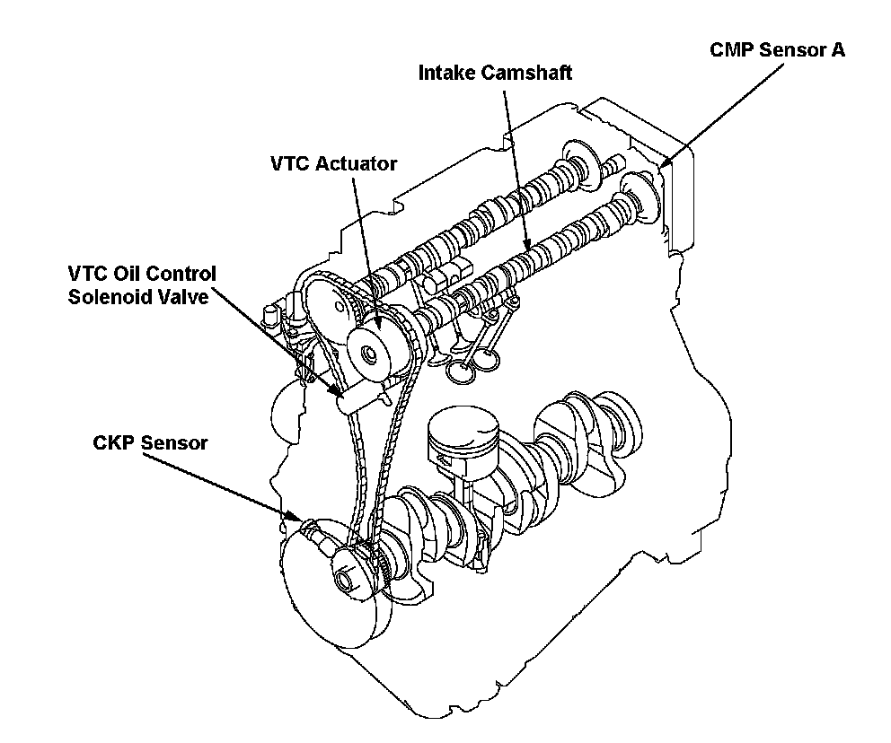
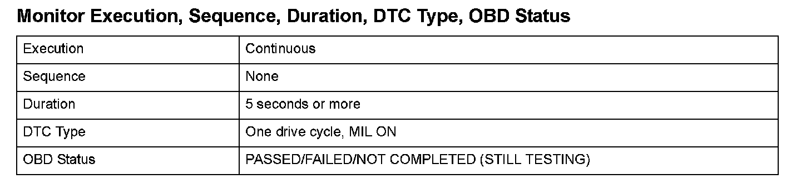
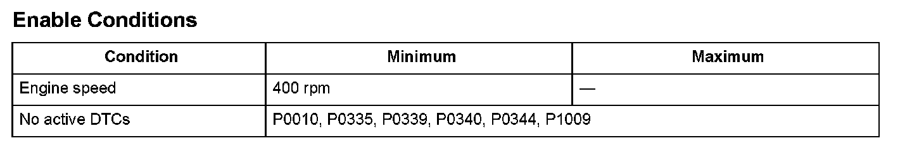

Advanced Diagnostics
DTC P0341: Camshaft Position (CMP) Sensor A and Crankshaft Position (CKP) Sensor Incorrect Phase Detected (Engine Type: K20Z3)
General Description
Camshaft position (CMP) sensor A detects the intake camshaft timing and sends pulsing signals to the engine control module (ECM). The ECM determines the advance or the retard of the camshaft timing according to the signals from the crankshaft position (CKP) sensor and CMP sensor A. If the pulse deviates from a set range over a specified time period while the variable valve timing control (VTC) is not activated, or the timing of the camshaft deviates from a set range over a specified time period while the engine is running with the VTC activated, a malfunction is detected and a DTC is stored.

Monitor Execution, Sequence, Duration, DTC Type, OBD Status

Enable Conditions
Malfunction Threshold
VTC OFF
- The gap between the position of the CMP sensor A pulse and the median of the CMP sensor A assembly is 10° or more for at least 5 seconds.
Engine running, VTC active
- The timing of the camshaft is out of the specified range (other than when BTDC is between 10 - 100°) for at least 5 seconds.
Driving Pattern
1. Start the engine. Hold the engine speed at 3,000 rpm without load (in neutral) until the radiator fan comes on.
2. Drive the vehicle at a steady speed between 19 - 38 mph (30 - 60 km/h) for at least 10 minutes.
- Drive the vehicle in this manner only if the traffic regulations and ambient conditions allow.
Diagnosis Details
Conditions for illuminating the MIL
When a malfunction is detected, the MIL comes on and the DTC and the freeze frame data are stored in the ECM memory.
Conditions for clearing the MIL
The MIL will be cleared if the malfunction does not recur during three consecutive trips in which the diagnostic runs.
The MIL, the DTC, and the freeze frame data can be cleared by using the scan tool Clear command or by disconnecting the battery.